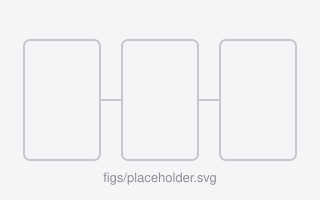

Jiaming Ding
I build machine learning systems that ship on devices in people’s hands.
I am a Staff Machine Learning Engineer at OPPO US Research Center, where I work on taking models from research prototypes to production on real devices. My work spans large language and multimodal models, efficient on-device inference, and the training and serving infrastructure that makes them dependable at scale.
I received my M.S. from Rutgers University and my B.S. from Wuhan University. Since then I have worked across the full model lifecycle — data, training, evaluation, and deployment.
News
-
One paper accepted to ECCV 2026 Sep 2026
-
Mind Pilot ships on OPPO devices Jun 2026
Led the system-level AI assistant behind Mind Pilot, now released to market.
-
AI Clarity Enhancer in the OPPO Find X8 series Nov 2024
Led the AI Clarity Enhancer feature, shipped in the OPPO Find X8 series and ColorOS 15.
Publications
-

Paper title goes here 2025Author One, Jiaming Ding, Author Three. Conference or Journal Name.One sentence on what the paper does — the claim a reader should take away if they read nothing else.
-
An entry without a figure 2024Jiaming Ding, Author Two. Workshop Name.
Full list on Google Scholar.
Research Interests
- Large language models: post-training, alignment, and evaluation
- Multimodal understanding and generation
- Efficient inference: quantization, distillation, on-device serving
- ML systems and training infrastructure